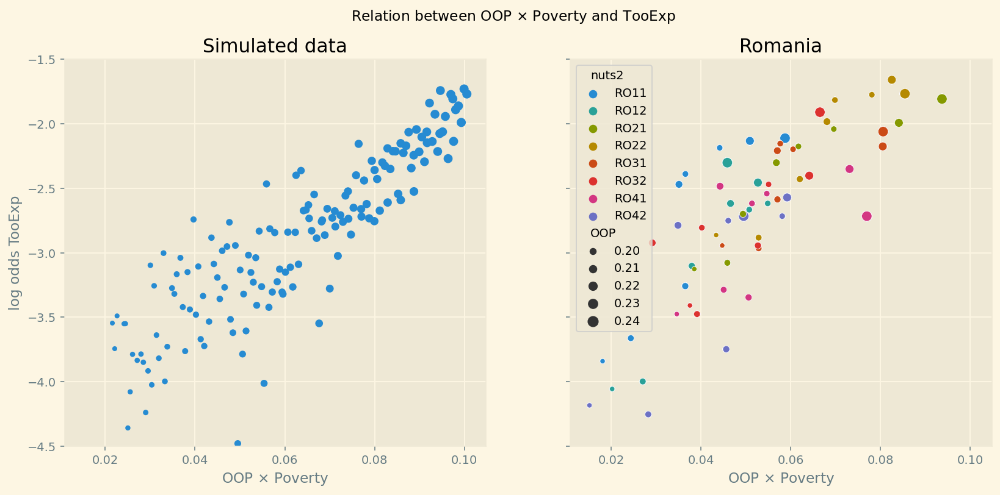
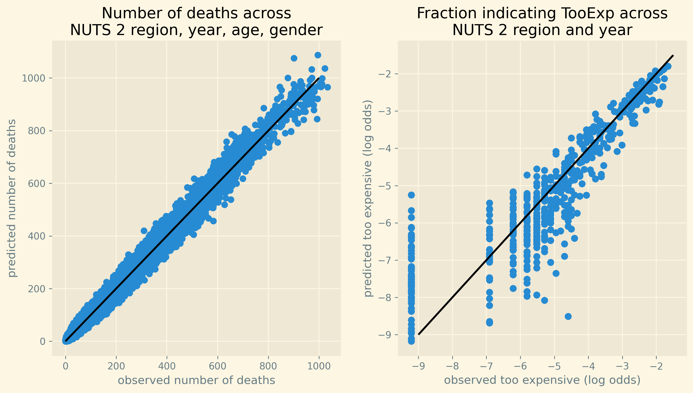

Health effects of OOP
Jan Boone
Work in Progress
Table of Contents
Introduction
Health insurance
- healthcare costs increase in all developed countries
- health insurance can cause moral hazard
- oop payments is one way to mitigate this
- if a deductible increase reduces expenditure, we view this as welfare enhancing
- trade off: risk aversion
- what if oop cause people to postpone valuable treatments?
- can we identify this effect across countries?
Health effects
- postponing/forgoing valuable care has health effects
- measuring health effects is not easy
- we use mortality per NUTS 2 region/year/age/gender in European countries
- fixed effects to control for non-observed variables
Insurance generosity
- comparing insurance generosity across countries is not straightforward
- how to compare a system with high deductible but low coinsurance rate?
- we use
OOP: % oop in total health expenditure - high oop is especially problematic for people on low income
- they could forgo valuable treatment if it is expensive
- if this mechanism exists: higher mortality in regions where
OOP\(\times\)Povertyis high
NUTS 2 regions in Europe

summary

Literature: individual level data
- recent literature on relation oop and mortality
- US individual level data
- e.g. Miller et al. (2021) on Medicaid eligibility expansion:
- introduced in different states at different times
- Chandra et al. (2021) Medicare part D prescription drug coverage
- enrollment month
- behavioral hazard: Baicker et al. (2015)
This paper
- European regional data
- more broad brush: cannot capture effect of 1% increase in deductible
- compare health insurance systems that are more/less generous
- more variation in
OOPthan with Dutch individual level data - European health insurance more homogeneous across regions in a country
Two equations to estimate
theory
- using a theoretical model we derive two equations to estimate:
- probability of death as a function of
Unmetmedical needs - probability that someone forgoes treatment because it is too expensive as a function of
OOPandPoverty
- probability of death as a function of
Number of deaths
- per age, gender, year, nuts 2 region
- \(k\) deaths out of \(n\) population: \(\binom{n}{k} m^{k}(1-m)^{n-k}\)
\[ m_{ga2t} = \frac{e^{\beta_{ag}}}{1+e^{\beta_{ag}}} e^{\left( \mu_2 + \gamma \ln \left(\frac{m_{a-1,g,2,t-1}}{\bar{m}_{a-1,g}}\right)+ \beta_{poverty}\text{Poverty}_{2t} + \beta_{unmet}\text{Unmet}_{2t}\right)} \]
Too expensive
- one motivation for unmet medical needs is that treatment is too expensive
- fraction of people in a region indicating that they postponed/forgone treatment because it was too expensive:
\[ \text{TooExp}_{2t} = b_{0,2} + b_{0,t} + \text{OOP}_{ct} \bar{x}_{ct} \left( b_{oop,c} + b_{interaction,c} \text{Poverty}_{2t} \right) \]
- equation is derived by varying co-insurance and deductible
Relation OOP and TooExp

Data
Eurostat data: 2009-2019; ages 35-85
| count | mean | std | |
|---|---|---|---|
| population | 52612.00 | 7491.28 | 4805.28 |
| deaths | 52612.00 | 103.19 | 126.49 |
| deprivation | 52612.00 | 11.23 | 12.78 |
| too exp. | 52612.00 | 2.00 | 3.09 |
| unmet | 52612.00 | 4.93 | 3.73 |
| out-of-pocket | 52612.00 | 22.03 | 8.88 |
| expend. per head | 52612.00 | 3379.56 | 2688.57 |
Estimation
Estimation technique
- Bayesian analysis: are we 95% sure that the following chain of effects is present:
- higher oop leads to higher unmet needs in areas with high poverty
- which then leads to higher mortality
Results
Fit

Figure 1: Fit of estimated and observed mortality across all observations.
NUTS 2 region per country
| region | country | deprivation | too expensive |
|---|---|---|---|
| BG33 | Bulgaria | 0.40 | 0.08 |
| HR04 | Croatia | 0.13 | 0.01 |
| DK02 | Denmark | 0.04 | 0.00 |
| EL63 | Greece | 0.28 | 0.07 |
| HU31 | Hungary | 0.32 | 0.02 |
| RO22 | Romania | 0.32 | 0.11 |
size of effects
other causes of deaths
| icd-10 | per 1000 |
|---|---|
| Tuberculosis | 0.93 |
| HIV | 0.72 |
| Malignant melanoma of skin | 4.20 |
| Leukaemia | 10.15 |
| Influenza (including swine flu) | 1.18 |
| Alzheimer disease | 13.08 |
Robustness analysis
- include voluntary health insurance payments in
OOPmeasure - at risk of poverty as poverty measure
- separate effect of
TooExpand other unmet medical needs on mortality
Conclusions
Policy implications
- increasing oop leads to more costs than just risk aversion
- doing without oop is not an option:
- means tested oop
- let copayments vary with cost effectiveness of treatments